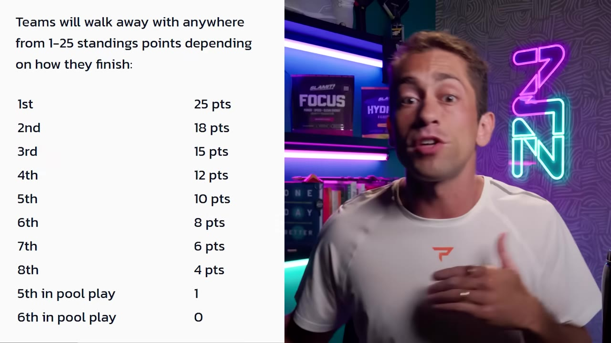
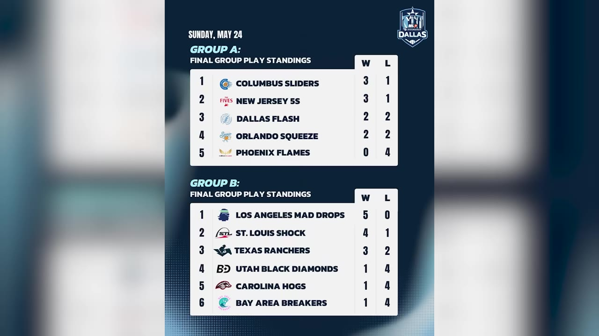
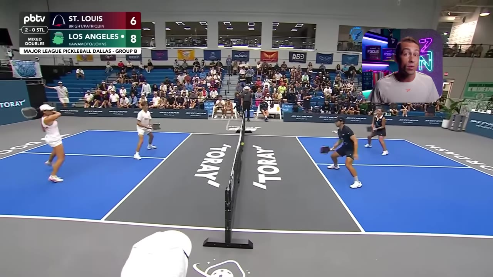
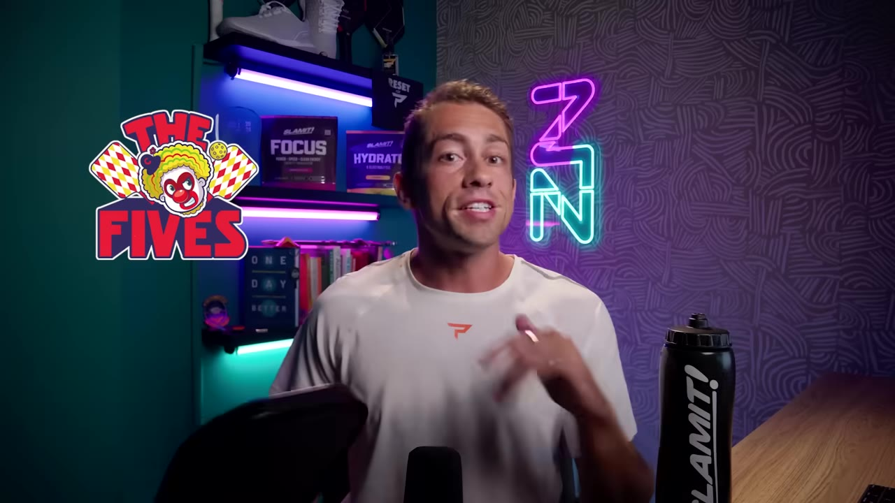
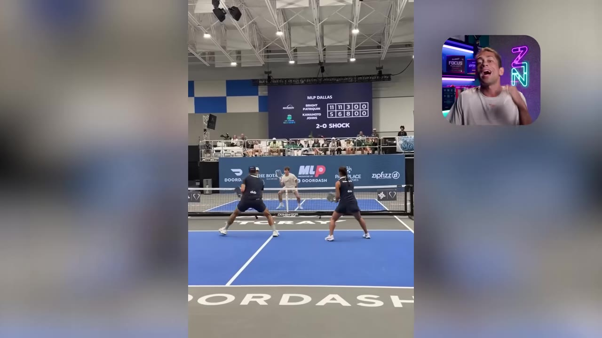

MLP Is Back: The Dallas Recap, and the Day Ben Johns Silenced Even His Biggest Critic
Major League Pickleball returned with a brand-new format, 19 of 20 teams reshuffled, fresh rule controversies — and a genuine redemption arc. Here's the Dallas event in six beats, ending with the moment host Zane Navratil ate his own words on Ben Johns.
Watch on YouTubeThe 30-second version
- MLP scrapped its grindy NHL-style regular season for two round-robin pools where your weekend finish maps directly to standings points — and the gap from 1st (25) to 2nd (18) is brutal, so every match matters.
- The LA Mad Drops won the event and a full 25 points, with Ben Johns "redlining" next to Jade Kawamoto in a way we haven't seen from him in years.
- Defending champ Columbus Sliders took 2nd without their top woman, Paris Todd (suspended) — fill-in Alex Strong played so well people wondered if she'd earned the spot.
- The New Jersey Fives broke up the best mixed pair in the league on purpose; Zane thinks it's a mistake, and they slid from an S-tier team to merely high-A.
- New officiating took center stage — a "step on the court and you're carded" rule players openly hate, plus Owl AI line-calling that Zane argues just isn't accurate enough yet.
01 · The new format
Two pools, and a savage gap between 1st and 2nd
For two years MLP ran an NHL-style regular season — three points for a win, two for a Dreambreaker win — and by the end it "became a boring grind," with teams already clinched or eliminated. The fix Zane says he'd been pushing for: two round-robin pools, and where you finish on the weekend maps straight to standings points.

Before you guys complain that MLP is constantly changing — which you are absolutely right about — ask yourself, is this format not way better? I think unequivocally it is.— Zane Navratil
02 · How it shook out
One night, two pools, a clear pecking order
Only one of the 20 MLP teams — the St. Louis Shock, who paid $1.3M to keep Anna Bright — kept last year's lineup. The other 19 all changed. After pool play, the bracket sorted itself cleanly: pool winners played for 1st/2nd, runners-up for 3rd/4th, and so on down.

The headline upset of the seeding: everyone expected Shock-vs-Fives for first. Instead the Shock beat the Fives in a Dreambreaker — for the fifth straight time — and that match decided third place, not first.
03 · The winners
The Mad Drops took it, and Ben Johns looked like Ben Johns
The LA Mad Drops were seen as a tier below the Shock and Fives going in, but made "as compelling an argument as possible" that they belong in the S-tier. They won the event and 25 standings points despite a weird week of mixed results.

The story of the weekend for LA was Ben. After losing both men's and women's doubles in one tie, "Ben played some of the best ball I've seen him play in a long time," carrying them to an 11–6 win and then a Dreambreaker. Behind them, the defending-champ Columbus Sliders took 2nd — remarkably, without their top female Paris Todd, who's serving a suspension. Fill-in Alex Strong was so good "some people were wondering if she earned herself a lineup spot."
04 · The gamble
The Fives broke up the best pair in the league
For two years, Will Howells and Anna Lee Waters were the best mixed team in MLP. So the New Jersey Fives… split them up, pairing Will with Georgia instead. Zane's verdict was blunt.

The numbers backed the skepticism: Anna Lee and Noi went 4–1 on the weekend, while Will and Georgia went just 2–3. Anna Lee and Georgia are "far and away the best women's team," but the other three lineup spots look shaky.
05 · Rules & robots
New cards players hate, and AI calls nobody trusts yet
Two officiating stories dominated the off-court chatter. First, new UPA rules made stepping onto the court a cardable offense — and players are not happy. Second, MLP rolled out Owl AI line-calling, which Zane found accurate "within a couple inches"… and not in a good way.

Honestly, I think it's a dumb rule. I think what makes MLP exciting is the team aspect of it — the coaching on the sidelines, the cheering. Getting punished for trying to show some support… I think it's really dumb.— Federico Staksrud, on the new card rule
On the AI: "until this stuff is made public, we're going to continue to question it… these programs just are not good enough yet."
06 · The mea culpa
"I was wrong about Ben"
Zane saved this for the end "because I'm still salty about it." He'd long argued Hayden Patrick had a higher ceiling than Ben Johns. This weekend, paired with Jade Kawamoto, Ben "redlined like we haven't seen for years — he was everywhere, he was dominant."

Great day for my haters, but it gives me an opportunity to communicate something to you guys. I've been wrong previously, and I will absolutely definitely be wrong again. But I'm not going to double down — when new information comes to light, I'll admit when I'm wrong.— Zane Navratil
The bigger point lands past pickleball: the willingness to say "I was wrong" out loud, on camera, is rarer than the hot take that needed correcting.